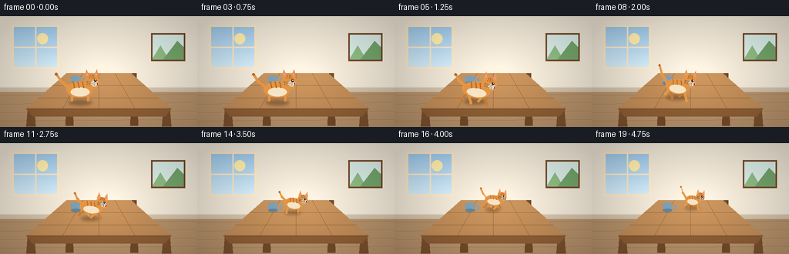
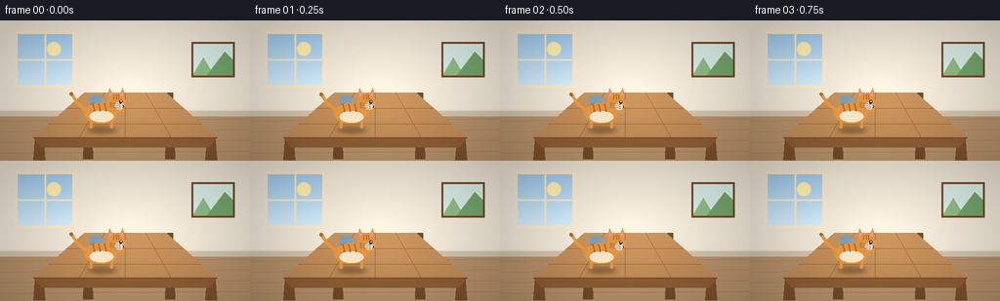

CODING AGENTS AS PIXEL WORLD MODELS
traex/Seed-2.1-Pro-0915 · dynamic_spatial_relationship_0013
点击播放 · 原生 RGB 像素
逐轮保存的候选
回放视频、检查图与代码变化。
每份候选均可单独播放。实际图片检查记录在下方工具轨迹中。
候选 01播放与检查图
点击播放 · 原生 RGB 像素


展开代码变化
--- 上一保存版本
+++ 本次保存版本
@@ -0,0 +1,314 @@
+"""Procedural t2v clip: a cat on a table runs to the back of the table.
+
+20 RGB frames, 256x144 @ 4 fps. Everything is drawn from mathematical
+geometry with PIL at 2x supersampling, then downsampled for anti-aliasing.
+"""
+from pathlib import Path
+import math
+
+import numpy as np
+from PIL import Image, ImageDraw, ImageFilter
+
+import artifact_io
+
+SS = 2 # supersampling factor
+W, H = 256, 144
+SW, SH = W * SS, H * SS
+N_FRAMES, FPS = 20, 4.0
+
+# ---- palette -------------------------------------------------------------
+WALL = (236, 227, 211)
+WALL_DARK = (222, 210, 192)
+BASEBOARD = (205, 190, 168)
+FLOOR = (178, 142, 104)
+FLOOR_DARK = (160, 124, 88)
+WOOD_TOP = (176, 124, 74)
+WOOD_TOP_HI = (196, 146, 94)
+WOOD_EDGE = (138, 92, 52)
+WOOD_DARK = (112, 72, 40)
+LEG_WOOD = (120, 78, 44)
+ORANGE = (228, 148, 66)
+ORANGE_FAR = (196, 120, 48)
+ORANGE_DARK = (178, 104, 40)
+CREAM = (246, 228, 198)
+PINK = (236, 152, 160)
+INK = (58, 42, 36)
+SKY_TOP = (158, 200, 232)
+SKY_LO = (208, 232, 244)
+
+
+def lerp(a, b, t):
+ return a + (b - a) * t
+
+
+def smoothstep(t):
+ t = max(0.0, min(1.0, t))
+ return t * t * (3.0 - 2.0 * t)
+
+
+def capsule(draw, p1, p2, width, fill):
+ """Thick round-ended line segment."""
+ draw.line([p1, p2], fill=fill, width=width)
+ r = width / 2.0
+ for x, y in (p1, p2):
+ draw.ellipse([x - r, y - r, x + r, y + r], fill=fill)
+
+
+def draw_room():
+ """Static background: wall, window, picture, floor, perspective table."""
+ img = Image.new("RGB", (SW, SH), WALL)
+ d = ImageDraw.Draw(img)
+
+ # wall / floor split
+ horizon = 92 * SS
+ d.rectangle([0, horizon, SW, SH], fill=FLOOR)
+ d.rectangle([0, horizon, SW, horizon + 6 * SS], fill=BASEBOARD)
+ d.line([0, horizon, SW, horizon], fill=WALL_DARK, width=SS)
+
+ # floor plank seams
+ for i in range(1, 6):
+ y = horizon + i * 11 * SS
+ d.line([0, y, SW, y - 2 * SS], fill=FLOOR_DARK, width=max(1, SS // 2))
+
+ # window with sky gradient, frame and sun
+ x0, y0, x1, y1 = (v * SS for v in (18, 14, 74, 66))
+ sky = np.linspace(0, 1, y1 - y0).reshape(-1, 1)
+ grad = (np.array(SKY_TOP)[None, None, :] * (1 - sky[..., None])
+ + np.array(SKY_LO)[None, None, :] * sky[..., None]).astype(np.uint8)
+ grad = np.repeat(grad, x1 - x0, axis=1)
+ img.paste(Image.fromarray(grad, "RGB"), (x0, y0))
+ sd = ImageDraw.Draw(img)
+ sd.ellipse([x0 + 30 * SS, y0 + 8 * SS, x0 + 44 * SS, y0 + 22 * SS],
+ fill=(255, 236, 170))
+ sd.rectangle([x0 - 3 * SS, y0 - 3 * SS, x1 + 3 * SS, y1 + 3 * SS],
+ outline=CREAM, width=3 * SS)
+ midx, midy = (x0 + x1) // 2, (y0 + y1) // 2
+ sd.line([midx, y0, midx, y1], fill=CREAM, width=2 * SS)
+ sd.line([x0, midy, x1, midy], fill=CREAM, width=2 * SS)
+
+ # framed picture on the right
+ px0, py0, px1, py1 = (v * SS for v in (196, 22, 240, 58))
+ d.rectangle([px0, py0, px1, py1], fill=(214, 232, 226))
+ d.polygon([(px0, py1), (px0 + 12 * SS, py0 + 16 * SS),
+ (px0 + 24 * SS, py1)], fill=(140, 184, 130))
+ d.polygon([(px0 + 14 * SS, py1), (px1 - 10 * SS, py0 + 10 * SS),
+ (px1, py0 + 20 * SS), (px1, py1)], fill=(112, 160, 104))
+ d.rectangle([px0, py0, px1, py1], outline=WOOD_DARK, width=2 * SS)
+
+ # ---- table -----------------------------------------------------------
+ bl = (86 * SS, 74 * SS) # back-left
+ br = (170 * SS, 74 * SS) # back-right
+ fr = (222 * SS, 120 * SS) # front-right
+ fl = (34 * SS, 120 * SS) # front-left
+
+ # back legs (mostly hidden beneath the top, drawn first)
+ for top in (bl, br):
+ x = top[0] + 4 * SS
+ d.polygon([(x - 3 * SS, top[1]), (x + 3 * SS, top[1]),
+ (x + 5 * SS, 142 * SS), (x - 5 * SS, 142 * SS)],
+ fill=WOOD_DARK)
+
+ # front legs
+ for top, inset in ((fl, 6 * SS), (fr, -6 * SS)):
+ x = top[0] + inset
+ d.polygon([(x - 4 * SS, top[1] - 2 * SS), (x + 4 * SS, top[1] - 2 * SS),
+ (x + 6 * SS, 143 * SS), (x - 6 * SS, 143 * SS)],
+ fill=LEG_WOOD)
+
+ # tabletop with a soft vertical light gradient
+ top_poly = [bl, br, fr, fl]
+ mask = Image.new("L", (SW, SH), 0)
+ ImageDraw.Draw(mask).polygon(top_poly, fill=255)
+ ys = np.linspace(0, 1, SH).reshape(-1, 1, 1)
+ grad = (np.array(WOOD_TOP_HI)[None, None, :] * (1 - ys * 0.55)
+ + np.array(WOOD_TOP)[None, None, :] * (ys * 0.55)).astype(np.uint8)
+ grad = np.repeat(grad, SW, axis=1)
+ img.paste(Image.fromarray(grad, "RGB"), (0, 0), mask)
+
+ # perspective plank seams
+ for u in (0.25, 0.5, 0.75):
+ bx = lerp(bl[0], br[0], u)
+ fx = lerp(fl[0], fr[0], u)
+ d.line([(bx, bl[1]), (fx, fl[1])], fill=WOOD_EDGE, width=max(1, SS // 2))
+ for v in (0.35, 0.7):
+ lx = lerp(bl[0], fl[0], v)
+ rx = lerp(br[0], fr[0], v)
+ ly = lerp(bl[1], fl[1], v)
+ ry = lerp(br[1], fr[1], v)
+ d.line([(lx, ly), (rx, ry)], fill=WOOD_EDGE, width=max(1, SS // 2))
+
+ # front apron / thickness
+ d.polygon([fl, fr, (fr[0] - 8 * SS, 130 * SS),
+ (fl[0] + 8 * SS, 130 * SS)], fill=WOOD_EDGE)
+ d.line([fl, fr], fill=WOOD_DARK, width=SS)
+
+ # mug sitting at the back-left of the tabletop
+ mx, my = 98 * SS, 80 * SS
+ d.ellipse([mx - 7 * SS, my - 3 * SS, mx + 7 * SS, my + 3 * SS],
+ fill=(120, 150, 168))
+ d.rectangle([mx - 6 * SS, my - 2 * SS, mx + 6 * SS, my + 8 * SS],
+ fill=(120, 150, 168))
+ d.ellipse([mx - 6 * SS, my + 5 * SS, mx + 6 * SS, my + 9 * SS],
+ fill=(96, 124, 142))
+ d.arc([mx + 5 * SS, my, mx + 12 * SS, my + 7 * SS], -80, 90,
+ fill=(120, 150, 168), width=2 * SS)
+
+ # gentle center light, corner vignette
+ yy, xx = np.mgrid[0:SH, 0:SW]
+ dist = np.sqrt(((xx - SW * 0.52) / (SW * 0.75)) ** 2
+ + ((yy - SH * 0.55) / (SH * 0.9)) ** 2)
+ light = np.clip(1.12 - dist * 0.35, 0.82, 1.08)[..., None]
+ arr = np.clip(np.asarray(img).astype(np.float32) * light, 0, 255).astype(np.uint8)
+ return Image.fromarray(arr, "RGB")
+
+
+BACKGROUND = draw_room()
+
+
+def draw_cat(scale, phase, running, time_phase, lean_deg):
+ """Render one cat pose on an RGBA layer; anchor is the feet midpoint."""
+ s = SS * scale
+ layer = Image.new("RGBA", (150 * SS, 110 * SS), (0, 0, 0, 0))
+ d = ImageDraw.Draw(layer)
+ ax, ay = 72 * SS, 92 * SS # anchor (feet) in layer coords
+
+ def P(x, y):
+ return (ax + x * s, ay + y * s)
+
+ def E(cx, cy, rx, ry, fill):
+ d.ellipse([P(cx - rx, cy - ry), P(cx + rx, cy + ry)], fill=fill)
+
+ bob = math.sin(phase * 2) * 1.6 if running else math.sin(time_phase) * 0.5
+ stretch = 1.0 + (0.08 * math.sin(phase) if running else 0.0)
+
+ # ---- legs (far pair first, darker) ----------------------------------
+ hip_r, hip_f = (-11, -9), (10, -9)
+ amp = 9.0 if running else 0.0
+ leg_w = max(2, int(round(3.2 * s)))
+ # phase offsets: diagonal trot pairs
+ legs = [
+ (hip_r, math.pi, ORANGE_FAR, True), # rear far
+ (hip_f, 0.0, ORANGE_FAR, True), # front far
+ (hip_r, 0.0, ORANGE, False), # rear near
+ (hip_f, math.pi, ORANGE, False), # front near
+ ]
+ for (hx, hy), off, col, far in legs:
+ ph = phase + off
+ dx = amp * math.sin(ph)
+ lift = max(0.0, math.cos(ph)) * (5.5 if running else 0.0)
+ foot = (hx + dx, -1.0 + lift + (bob if not far else bob * 0.6))
+ capsule(d, P(hx, hy + bob), P(*foot), leg_w, col + (255,))
+
+ # ---- tail (sways behind the body) -----------------------------------
+ sway = math.sin(phase + 0.8) * (5.0 if running else 2.2)
+ base = P(-15, -17 + bob)
+ mid = P(-25, -26 + bob + sway * 0.5)
+ tip = P(-31, -36 + bob + sway)
+ tw = max(2, int(round(4.2 * s)))
+ capsule(d, base, mid, tw, ORANGE + (255,))
+ capsule(d, mid, tip, max(2, int(round(3.0 * s))), ORANGE + (255,))
+ d.ellipse([tip[0] - 1.6 * s, tip[1] - 1.6 * s,
+ tip[0] + 1.6 * s, tip[1] + 1.6 * s], fill=ORANGE_DARK + (255,))
+
+ # ---- body ------------------------------------------------------------
+ bcx, bcy = -1.0, -15.0 + bob
+ brx, bry = 17.0 * stretch, 10.5
+ E(bcx, bcy, brx, bry, ORANGE + (255,))
+ # cream belly
+ E(bcx + 1, bcy + 3.5, brx * 0.72, bry * 0.55, CREAM + (255,))
+ # tabby stripes along the back
+ for sx in (-9, -3, 3):
+ top = P(sx, bcy - bry + 1.5)
+ bot = P(sx + 1.5, bcy - bry * 0.25)
+ capsule(d, top, bot, max(1, int(1.6 * s)), ORANGE_DARK + (255,))
+
+ # ---- head ------------------------------------------------------------
+ hx, hy = 15.0, -25.0 + bob
+ hr = 9.5
+ # ears
+ for sgn in (-1, 1):
+ ex = hx + sgn * 5.5
+ ey = hy - hr + 1
+ d.polygon([P(ex - 3.2, ey + 2), P(ex + 3.2, ey + 2),
+ P(ex + sgn * 1.2, ey - 7.5)], fill=ORANGE + (255,))
+ d.polygon([P(ex - 1.4, ey + 1), P(ex + 1.4, ey + 1),
+ P(ex + sgn * 0.7, ey - 4.5)], fill=PINK + (255,))
+ E(hx, hy, hr, hr, ORANGE + (255,))
+ # muzzle
+ E(hx + 3.5, hy + 2.5, 4.6, 3.6, CREAM + (255,))
+ # forehead stripes
+ for sgn in (-1, 0, 1):
+ capsule(d, P(hx + sgn * 2.2, hy - hr + 1),
+ P(hx + sgn * 2.8, hy - hr + 5),
+ max(1, int(1.3 * s)), ORANGE_DARK + (255,))
+ # eye, nose, mouth
+ E(hx + 4.5, hy - 1.5, 1.5, 1.9, INK + (255,))
+ E(hx + 5.0, hy - 2.1, 0.55, 0.55, (255, 255, 255, 255))
+ E(hx + 7.6, hy + 1.6, 1.15, 0.9, PINK + (255,))
+ capsule(d, P(hx + 7.6, hy + 2.4), P(hx + 7.6, hy + 3.6),
+ max(1, int(0.9 * s)), INK + (255,))
+ d.arc([P(hx + 5.5, hy + 2.2)[0], P(hx + 5.5, hy + 2.2)[1],
+ P(hx + 7.8, hy + 4.6)[0], P(hx + 7.8, hy + 4.6)[1]],
+ 20, 110, fill=INK + (255,), width=max(1, int(0.8 * s)))
+ # whiskers
+ for wy in (1.0, 3.0, 5.0):
+ capsule(d, P(hx + 4, hy + wy), P(hx - 6, hy + wy - 1.5),
+ max(1, int(0.7 * s)), (120, 100, 90, 255))
+
+ # forward lean while running, rotated around the feet anchor
+ if abs(lean_deg) > 0.01:
+ layer = layer.rotate(lean_deg, center=(ax, ay), resample=Image.BICUBIC)
+ return layer, (ax, ay)
+
+
+def cat_pose(frame_index):
+ """Map frame index -> (table position, scale, gait phase, state)."""
+ # idle for the first four frames ("a cat is on the table")
+ if frame_index <= 3:
+ t = 0.0
+ running = False
+ run_t = 0.0
+ else:
+ run_t = smoothstep((frame_index - 3) / (N_FRAMES - 1 - 3))
+ t = run_t
+ running = True
+
+ x = lerp(104, 130, t)
+ y = lerp(110, 82, t)
+ scale = lerp(1.0, 0.58, t)
+ cycles = 2.6
+ phase = run_t * cycles * 2.0 * math.pi
+ lean = -9.0 if running else 0.0
+ return x, y, scale, phase, running, lean
+
+
+def render_frame(frame_index):
+ frame = BACKGROUND.copy().convert("RGBA")
+ x, y, scale, phase, running, lean = cat_pose(frame_index)
+ time_phase = frame_index * 0.9
+
+ # contact shadow on the tabletop (perspective-flattened ellipse)
+ shadow = Image.new("RGBA", (SW, SH), (0, 0, 0, 0))
+ sd = ImageDraw.Draw(shadow)
+ sw_, sh_ = 30 * SS * scale, 7 * SS * scale
+ cx, cy = x * SS, (y + 2) * SS
+ sd.ellipse([cx - sw_ / 2, cy - sh_ / 2, cx + sw_ / 2, cy + sh_ / 2],
+ fill=(40, 26, 16, 90))
+ shadow = shadow.filter(ImageFilter.GaussianBlur(2 * SS))
+ frame.alpha_composite(shadow)
+
+ sprite, (ax, ay) = draw_cat(scale, phase, running, time_phase, lean)
+ frame.alpha_composite(sprite, (int(round(cx - ax)), int(round(y * SS - ay))))
+
+ rgb = frame.convert("RGB").resize((W, H), Image.Resampling.LANCZOS)
+ return np.asarray(rgb, dtype=np.uint8)
+
+
+def main():
+ frames = np.stack([render_frame(i) for i in range(N_FRAMES)], axis=0)
+ artifact_io.save(frames, Path(__file__).parent)
+ print(f"saved {frames.shape} video to {Path(__file__).parent}")
+
+
+if __name__ == "__main__":
+ main()
可观测工具轨迹
实际执行的命令与返回图片。
命令 1exit 0
/bin/bash -lc 'cat prompt.txt GENERATION_RULES.json 2>/dev/null; ls -la'
命令 2exit 0
/bin/bash -lc 'cat task_spec.json 2>/dev/null; cat GENERATION_RULES.md 2>/dev/null'
命令 3exit 0
/bin/bash -lc 'cat artifact_io.py'
命令 4exit 0
/bin/bash -lc 'cd . && python generate.py && ls -la frames | head -8 && ls -la pixels.npz index.html inspection.png'
保存候选 1 份；完成命令 4 次；可验证图片返回 0 张。原始 API 响应与完整日志保留在本地。